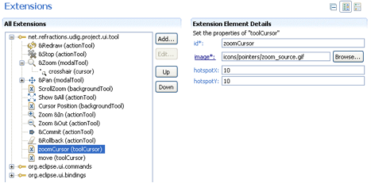
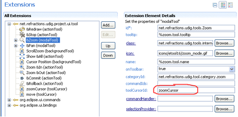

Tools must extend the net.refractions.udig.project.ui.tool extension point. The reference section provides a list of the extension points and technical documentation for the extension points.
All Tools are provided with a ToolContext object by the framework. The tools can use the context to access the model and to create and send commands which modify the model. Contexts have a large number of methods to simplify the job of tool authors. Please let us know of methods that would be useful or should be part of the context objects.
IMPORTANT: It is critical that the tools do not make a new reference to the context object because it is set each time the editor is activated and may change without notification.
There are three classes of tools:
Examples that are part of uDig:
Tools are grouped in Categories:
Tool extenders can also register a list of commands with the framework via the extension point definition. If this is done the Tool extender must also create a IHandler object, which is part of the eclipse command framework. An instance of the handler will be created for each command and each time a command occurs it will be passed to the handler to be handled.
The Tool interface is extended by several methods:
Tool.setEnabled(Boolean)
Tool.isEnabled()
This lets to enable/disable toolâs functionality at any time during tool lifecycle. When the tool is disabled, âNOâ cursor is initialized and the functionality is blocked by unregistering mouse listeners.
Only one modal tool can be active. There is no other opportunity to activate another disabled tool through UI contributions. When the tool is disabled, its UI contributions are disabled.
When the active tool is being disabled, its functionality is blocked but the tool is still active. The tool can be enabled by changing of context again. In that case only user manually can switch to any other enabled tool through UI contributions.
There are several ways to perform tool enablement. First way â“ the system performs enablement on the base of current context (selecting different layers, etc.). The second way â“ manually calling Tool.setEnabled(Boolean) from any place of tool implementation to simply block its functionality.
Only currently enabled tool can be activated.
Look into AbstractModalTool.setEnabled(Boolean) to get the idea.
I started tool lifecycle listeners: the initial three events are:
Tool lifecycle listeners are not used anywhere at the current moment, but it would be good to have such functionality to listen tools lifecycle events without overriding of Tool class methods.
Cursors for tools are cross-cutting concerns and they must be handled independently from tools with a purpose to be reused.
net.refractions.udig.project.ui.tool extension point is revisited with new element toolCursor:

Attributes are:
Once the tool cursor is defined as an extension it is accessible as a default tool cursor by toolCursorId attribute of modalTool element:

The cursor ID must be unique. In this case the cursor defined in one plugin can be accessible by the tool from another plugin just by ID.
Cursor is a disposable object and to implement lazy loading the proxy object is used in the same manner as ToolProxy object before:
net.refractions.udig.project.ui.internal.tool.display.CursorProxy
ToolManager is responsible to create full list of cursor proxies and cache them by ID from extension point. Whenever the actual org.eclipse.swt.graphics.Cursor object is needed you must call the following method:
Cursor IToolManager.findToolCursor(String cursorID);
In most cases the developer does not need the org.eclipse.swt.graphics.Cursor object while working with tools implementation. The Tools API is extended by the next methods to manage tool cursors:
ModalTool.setCursorID(String cursorID) String ModalTool.getCursorID()
These methods are responsible for the cursors management. The set method performs actual updating of mouse cursor image if it is needed.
Systems cursors are listed using constants in SWT class. Constants are integer numbers. While current âTool cursors frameworkâ uses string IDs it is recommended to work with mapped constants from ModalTool interface. These constants are mapped to system cursors. If the system cursor SWT.CURSOR_WAIT is needed then call routine:
ModalTool.setCursorID(ModalTool.WAIT_CURSOR);
In this case the framework recognizes that the system cursor is requested and sets it for the tool. You can combine as custom cursors as system using the underlying mechanism transparently.
The developer can declaratively add cursor images through extension mechanism and use them by ID from any place in source code. If the SWT object is needed call
IToolManager.findToolCursor(String cursorID).
If you just want to set cursor for the tool just call
ModalTool.setCursorID(String cursorID).
Updating of mouse cursor image is performed automatically by the framework depending on the current context, active tool, etc.
It is possible to support compatibility with cursor extension point under tool extension point as a default cursor for the tool.
Currently all tools are active but in the future would be desirable to have a tool configuration extension point where udig extenders can define which tools are activated for their application. A system like the eclipse command framework for Eclipse 3.1 is likely.
(c) Copyright (c) 2004-2008 Refractions Research Inc. and others.